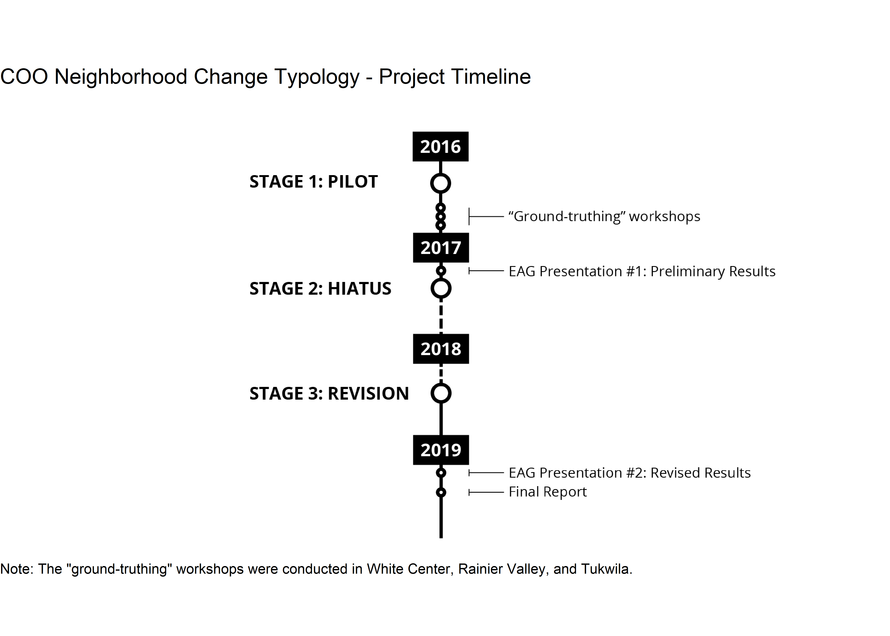

Chapter 1 Introduction
1.1 Project History
This project was undertaken at a time when King County was experiencing both economic and population growth.2 As with any growing region, the costs and benefits of this growth have not been experienced equally or equitably by the County’s residents. The government of King County, in partnership with the Seattle Foundation, formed a partnership and began implementing the Communities of Opportunity (COO) program with the goal of “address[ing] economic and racial inequities through place-based work and systemic change”3.
Two of COO’s signature strategies (the practice data-driven policy making and the creation of peer-based learning communities) were exemplified by a group of placed-based organizations that met regularly to discuss the challenges and opportunities of working with community data. Known as the Evaluation and Advisory Data Workgroup (EAG)4, this body provided the inspiration and motivation for the project that would become the “COO Neighborhood Change Typology Report”. At a meeting in early 2016, EAG participants discussed the four outcome areas that COO had identified5 and the “headline indicators” of these different topics. The group felt that progress was being made on the tracking of most indicators with one glaring exception: involuntary displacement. While everyone in the group had stories of neighbors and clients who were feeling displacement pressure (or had already moved because of it), the participants noted a lack of comprehensive data confirming these lived experiences. The group decided to explore how this problem might be addressed, a process which led to the formation of a subgroup and, ultimately, the creation of this report.
Timeline

Stage One: Pilot Project, 2016 - 2017
Between the project’s beginning in 2016 and the publishing of this report in early 2019, there have been several different stages. The first might be described as the “Pilot Project” and it included many stages of its own: the formation of the project team; a literature review; consultation with experts on demographic and real estate data; the development of a preliminary model and results; testing the veracity of these results by comparing them with community members’ lived experiences at “ground-truthing” workshops; and the periodic sharing of progress updates with the EAG. The Pilot Project ended with a presentation to a group of COO stakeholders that included EAG members as well as members of the program’s system change committee and staff from some of COO’s place-based partner organizations.
This presentation at the end of the Pilot turned out to be a critically important milestone for the project. The results of the Neighborhood Change Typology method suggested that some parts of Seattle’s Rainier Valley neighborhood and the cities of Seatac and Tukwila6 were at-risk for gentrification (and displacement) and that the unincorporated community of White Center was not. This finding did not match the experience that many of the members of those three communities. But in the case of White Center the findings were more than just an inaccurate characterization; as staff from the White Center Community Development Association (WC CDA) explained, these results had the potential to be “weaponized” by opponents of affordable housing and other equitable community development efforts. These staff offered to work with the project team to troubleshoot the model and look for opportunities to improve it but they also requested that the publication of the preliminary results wait until this follow-up work could be completed.
Stage Two: Hiatus, 2017 - 2018
The next stage of the project was a 12-month period of no activity that stretched from March 2017 to March 2018. This gap in progress was largely due to the COO program’s internal reorganization work that occurred during this time period.
Stage Three: Collaborative Revision, 2018 - 2019
In early summer of 2018, the project team reconvened and began working on a revision. Unlike the Pilot, the third stage was structured as a direct collaboration between the project team and staff from WC CDA. The project team took the lead on exploring alternative indicators that might improve the project’s model of neighborhood change and WC CDA staff provided their expertise on the specific displacement-related challenges that the members of their community faced (and continue to face). Additionally, this partnership led to productive discussions between the two groups about the challenging limitations that are present in “institutional data”7 and how these limitations reflect the priorities of America’s dominant culture.
1.2 Defining Gentrification & Displacement
Terms like “neighborhood change”, “gentrification”, and “displacement” have become increasingly commonplace in the popular discourse about American urban life but this doesn’t mean that there is broad agreement on what they mean. To the contrary, the academic literature on this subject contains a passionate debate around the definition of these words as well as the forces that cause them. This project benefits from the scholarship of researchers like Dr. Lisa Bates - who developed the method that this project is modeled after - and Dr. Miriam Zuk - who, along with her colleagues, produced a comprehensive literature review on these subjects (Bates, 2013; Miriam Zuk et al., 2015).
Influential Works
Rather than attempting to summarize the wide spectrum of thought on this topic, this report highlights the specific pieces of literature that contributed most to the authors’ understanding of this topic.
First and foremost, Dr. Bates’ 2013 report titled “Gentrification and Displacement Study: Implementing an Equitable Inclusive Development Strategy in the Context of Gentrification” provides an excellent overview of the scholarship before laying out a clear, reproducible method of “operationalizing” the concept of gentrification. Bates’ work itself builds on a 2005 article by Dr. Lance Freeman which introduced a focused set of socioeconomic and real estate indicators to measure gentrification (Freeman, 2005).
In addition to defining the “neighborhood change typology” model, Bates frames her analysis as a tool for selecting public policies that will promote equitable development rather than exacerbate displacement. She summarizes the public sector’s role in gentrification and recommends: a “market-conscious” strategy involving the monitoring of housing market indicators; the creation of regulations and incentives to “leverage limited housing resources”; and public support for community partner organizations as they build their capacity to lead anti-displacement efforts (Bates, 2013, pages 18–25).
In addition to Bates’ and Freeman’s respective works, the literature review by Dr. Miriam Zuk et al describes the scholarship landscape on neighborhood change, gentrification, and displacement. This work explains the different conceptions and helps dispel any notion that there might be a universally accepted method for measuring any of these phenomena. Dr. Jackelyn Hwang’s study of homeowner mobility in Philadelphia, which uses anonymized credit data from the Federal Reserve Bank of Philadelphia, illustrates the extraordinary degree of methodological ingenuity and access to private data that is required to “track” displacement at the household level (Ding and Hwang, 2018).
Lastly, the City of Seattle’s 2016 “Growth and Equity” report illustrates a different methodology applied to part of the study area of this report (City of Seattle, 2016). Although Seattle’s assessment of displacement risk is also informed by Dr. Bates’ work in Portland, OR; it uses a wide variety of indicators to produce an estimate of the relative amount of risk rather than the relative type of susceptibility (i.e., a “continuous” scale rather than a “discrete” one).
Key Terms Defined
While the authors acknowledge the existing debate around these terms, for the sake of clarity this project uses the following definitions when referring to each term:
- Neighborhood Change: a substantial shift in the socioeconomic and/or racial composition of a neighborhood’s residents and businesses along with the elements of the built environment that make up the neighborhood’s physical space.
- Gentrification: the socioeconomic “upgrading” of a neighborhood’s demographics combined with a shift from low to high real estate values. While gentrification in the US context is often associated with the racial turnover of majority people of color neighborhoods (Miriam Zuk et al., 2015, pages 7–9), this project does not limit its definition of gentrification to racial demographic change.8
- Displacement: “the involuntary relocation of current residents or businesses from their current residence” (City of Seattle, 2016, page 4). This may be caused by the physical destruction of a home, the process of becoming “priced out” of a neighborhood, or the loss of an individual’s community and community-serving institutions. While studies show that the causality between gentrification and displacement is less clear than the popular narrative would suggest (Ding et al., 2016, page 6), this project nevertheless follows Bates’ example of treating displacement as a negatives outcome resulting from the the process of neighborhood gentrification (Bates, 2013, pages 9–11).
Other terms used throughout this report include:
- Census Tract: according to the US Census Bureau, census tracts are “small, relatively permanent statistical subdivisions of a county or county equivalent and generally have a population size between 1,200 and 8,000 people, with an optimum size of 4,000 people” (US Census Bureau). For the purposes of this project, census tracts are used as a geographic proxy for neighborhoods.
- Indicator: an indicator is the “representation of statistical data for a specified time, place or any other relevant characteristic, corrected for at least one dimension (usually size) so as to allow for meaningful comparisons… It is a summary measure related to a key issue or phenomenon and derived from a series of observed facts” (Eurostat). For example, this project uses the percentage of a census tract’s population that are low-income as an indicator of vulnerability to displacement.
- Model: according to Professor Daniel Kaplan of Macalester College, a model is “a representation for a particular purpose” (Kaplan, 2009, page 6). This project builds a “classification model” of neighborhood change in order to better understand what displacement mitigation and neighborhood revitalization policies to consider adopting in specific neighborhoods throughout King County. The project’s model is grounded in a conceptual understanding of how neighborhood change works (see Freeman, 2005; Bates, 2013; and Miriam Zuk et al., 2015) and model’s results are determined by the indicator data.9
1.3 Project Summary
The primary goal of this project is to provide the COO partners with a clearer understanding of which neighborhoods in King County are experiencing gentrification or are at-risk of gentrifying. The gentrification of a neighborhood often leads to the removal of many of the residents (i.e., displacement), preventing them from receiving the benefits of the changes and improvements that characterize neighborhood revitalization efforts. As this region’s economic and population growth changes the composition of neighborhoods, it is critical that communities and their governments work together to ensure that the costs and benefits of growth are distributed equitably.
In addition to the question of which neighborhoods are at-risk or gentrifying, this project also tries to provide a useful description of what stage each neighborhood is at in the process. The concept of a “neighborhood change typology” that is actionable and connects to anti-displacement policies comes directly from the work of Dr. Bates (2013, page 9). Importantly (although perhaps counter-intuitively), this project does not try to measure the number of displaced households, nor does it try to predict displacement rates. While those two data points would be useful information and would fit nicely into the COO “headline indicator” framework, this project’s literature review suggests that there is not yet a methodologically sound way to measure them at the project’s geographic scale.
Because this project operates within the framework of the COO program, it focuses specifically on the census tracts10 that characterize the three original COO place-based communities. The purpose is not to compare one community against another but rather to provide a data-driven foundation for displacement mitigation and community restoration policies.
Finally, the project is intended to be clear, accessible, and reproducible; particularly to staff members of the COO community partners and the residents of the neighborhoods in those communities. The data and code files used to create the model and findings are published online and open to those who want to explore them.
References
Bates L, 2013, “Gentrification and Displacement Study: Implementing an Equitable Inclusive Development Strategy in the Context of Gentrification” Urban Studies and Planning Faculty Publications and Presentations, http://pdxscholar.library.pdx.edu/usp_fac/83
City of Seattle, 2016, “Seattle 2035 Growth and Equity Analysis”
Ding L, Hwang J, 2018, “Effects of Gentrification on Homeowners: Evidence from a Natural Experiment” Discussion Papers - Community Development and Regional Outreach, https://www.philadelphiafed.org/-/media/community-development/publications/discussion-papers/discussionpaper-effects-of-gentrification-on-homeowners.pdf
Ding L, Hwang J, Divringi E, 2016, “Gentrification and residential mobility in Philadelphia” Regional Science and Urban Economics 61 38–51, http://www.sciencedirect.com/science/article/pii/S0166046216301223
Freeman L, 2005, “Displacement or Succession?: Residential Mobility in Gentrifying Neighborhoods” Urban Affairs Review 40(4) 463–491, https://doi.org/10.1177/1078087404273341
Kaplan D T, 2009 Statistical modeling: A fresh approach (CreateSpace, Scotts Valley, Calif.)
Miriam Zuk, Ariel H. Bierbaum, Karen Chapple, Karolina Gorska, Anastasia Loukaitou-Sideris, Paul Ong, Trevor Thomas, 2015, “Gentrification, Displacement and the Role of Public Investment: A Literature Review” Federal Reserve Bank of San Francisco, http://www.frbsf.org/community-development/publications/working-papers/2015/august/gentrification-displacement-role-of-public-investment/
Between 1985 and 2015, King County’s population grew by 25% (1.4M to 2.1M) and it is expected to grow to 2.3M by 2031 (King County, 2016)↩
To learn more information about COO visit the program’s website↩
The name was initially just “The COO Data Workgroup” but it changed in 2018 to reflect the COO program’s focus on internal evaluation↩
These include health, housing, economic opportunity, and community connections↩
These two cities were treated as a single place-based “community” in the COO program↩
In this context, the term “institutional data” was used to refer to data that are created by public agencies (e.g., the US Census) and it was contrasted with “community data” that don’t come from centralized, institutional sources↩
While this project doesn’t require evidence of racial turnover in order for a neighborhood to be considered “gentrifying”, this study shows that increases in white, non-hispanic population are common in King County’s gentrifying census tracts. See the #methods section for a detailed explanation of how this project defines gentrification↩
A common aphorism in the field of statistics says that “all models are wrong, but some are useful” (Box, 1976). This phrase means that models are necessarily a simplification of reality and, therefore, they should be judged not by their accuracy alone but by their ability to represent a phenomenon with enough accuracy to be useful.↩
Census tracts are a geographic unit created used by the US Census to organize its survey data. Although these geographies are often used as proxies for neighborhoods, they almost never align with the actual boundaries of any given city’s neighborhoods. For that reason, they should be consider a “best approximation” of neighborhoods rather than an exact representation.↩